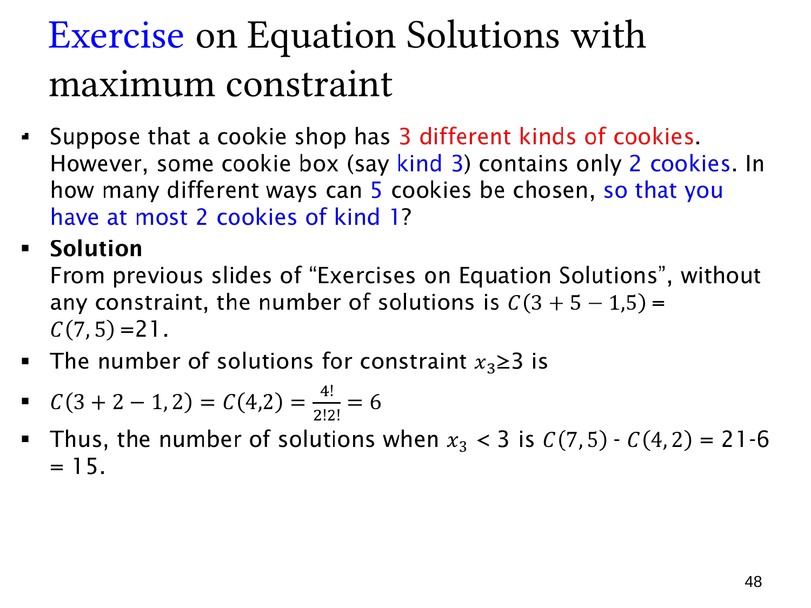

L1.6 · 第 48 页讲解原文
查看这一页课件

有上限的整数解：减去超限情况
本页解答采用的条件是第三种饼干最多选两块，即
x1+x2+x3=5,xi≥0,x3≤2.
所有非负解共 C(7,5)=21。不符合上限的情况是 x3≥3，不是 x3≥2。
令 y3=x3−3≥0，超限方程转为 x1+x2+y3=2，共有 C(4,2)=6 个解。因此合法数为
21−6=15.
也可按 x3=0,1,2 分类，剩余两变量的解数分别为 6,5,4，总计 15。
原页题干先说第 3 类库存只有两块，随后又说“kind 1 最多两块”，而解答始终使用 x3。若本意是仅有一个类别受上限约束，无论该类编号为 1 还是 3，对称性都给出 15。
若严格同时保留“第 3 类库存至多两块”和“第 1 类也至多两块”，则是两个限制，答案变成 9：x1,x3 各取 0、1、2，九种搭配的和都不超过 5，x2=5−x1−x3 唯一确定。不能将这一不同模型也解释为 15。
上限通常适合先数全部，再减去超限；多项上限还要处理超限情况的交叠。